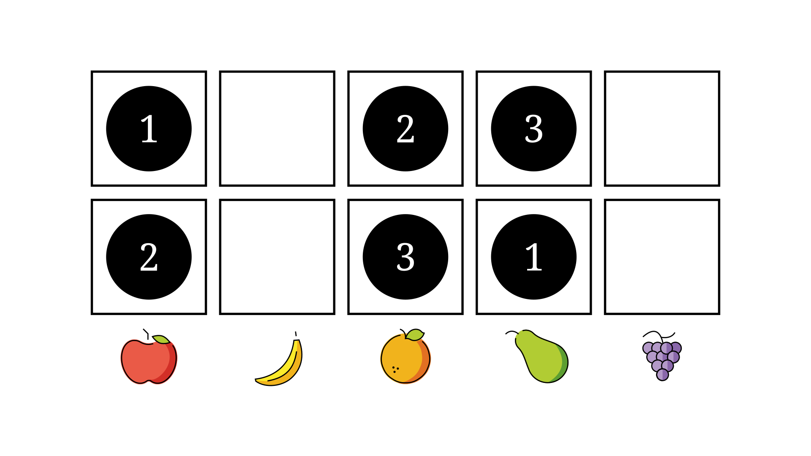
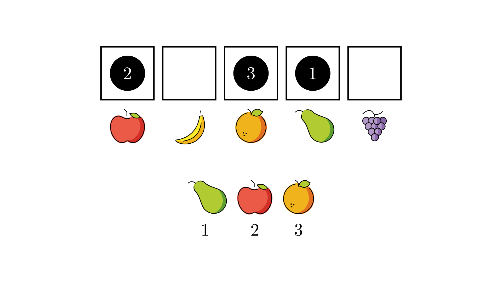

Counting Functions#
Note
This section assumes you’re familiar with the notions of injective, surjective, and bijective functions.
⎕IO←1
Balls and Boxes#
So far we’ve looked at two different counting problems: counting \(k\)-permutations and counting \(k\)-combinations. It turns out there’s a way of looking at these problems which shows an interesting way they are related, and lights the way towards understanding the problems we’re going to see over the rest of this chapter.
In the previous section, we saw how we can represent a combination as a binary string:
'🍎🍌🍊🍐🍇'∊'🍎🍊🍐'
1 0 1 1 0
Suppose each character of this string corresponds to a box. Wherever a 0 appears, we leave the box empty. Wherever a 1 appears, we place a ball in the box. Each box represents an element of the original set, and placing a ball in the box represents selecting that element to be included in a combination.
The most important thing to notice about this analogy is this: the boxes are labelled, while the balls are unlabelled. Exactly which ball a box gets doesn’t matter, since the balls are indistinguishable. However, which box a ball is placed in does matter, since that dictates which element of the set is chosen. In this sense, the boxes are labelled with the elements of the set.

This setup gives us an alternative statement of the combination problem: there are k!n ways to place \(k\) unlabelled balls into \(n\) labelled boxes, with at most one ball in each box.
In isolation this is not particularly enlightening, but things get more interesting when we notice that we can tweak the parameters of the problem in three different ways. We can change whether the balls are labelled, whether the boxes are labelled, and how many balls are allowed in each box. This gives way to a whole family of counting problems, and we’ll be categorising them all in the next chapter. For now, let’s see how changing just one part of the problem effects things.
Let’s say that, instead of being indistinguishable, we’re going to label our \(k\) balls with ⍳k. Now, it does matter exactly which ball goes into which box:

With labelled balls, the problem no longer corresponds to counting \(k\)-combinations. Instead, it corresponds to counting \(k\)-permutations. If we take the label of ball as the index in a \(k\)-permutation, placing the balls in the boxes corresponds to choosing which element is placed at each index.

In later sections, we’re going to look at the other specific counting problems we can make by varying the labelling of both the balls and boxes. We’re also going to look at how controlling the number of balls which can go into each box affects the problems we make, which is going to require being more formal with our analogy.
Counting Functions#
Consider again the balls and boxes example we’ve just seen. It involves assigning a box to each ball we have. In other words, each placement of balls is equivalent to a monadic function which takes a ball as input, and returns the box it is placed in as output. We’ve been working with our fruit example until now, but to show how our problems can work for any set, we’re going to start using generic sets of inputs and outputs. This is not quite as fun but it helps to forget about the details of examples and just think about the counting itself. Specifically, we’ll just use ⍳k as our \(k\) element input set (our ‘balls’), and ⍳n as our \(n\) element output set (our ‘boxes’) from now on. In traditional mathematical notation, this means we’re working with functions \(f\) with type \(f:[k]\to[n]\).
For each \(k\) and \(n\), there are n*k possible functions from ⍳k to ⍳n (functions with type \([k]\to[n]\)), since there are \(n\) options for each of the \(k\) inputs. However, our counting problems usually have fewer valid assignments than this. For example, in our \(k\)-permutations problem, we only allowed at most one ball to be placed in each box, which means any function that places two or more balls in the same box isn’t counted.
Valid3Permutation←{
⍵=1: 4
⍵=2: 1
⍵=3: 3
}
Invalid3Permutation←{ ⍝ invalid: both 2 and 3 are sent to 1
⍵=1: 4
⍵=2: 1
⍵=3: 1
}
⊢p←Valid3Permutation¨⍳3
'🍎🍌🍊🍐🍇'[p]
⊢p←Invalid3Permutation¨⍳3
'🍎🍌🍊🍐🍇'[p]
4 1 3
🍐🍎🍊
4 1 1
🍐🍎🍎
This shows that in our counting problems which require at most one ball in a box, we are really counting injective functions, i.e. functions which which don’t send more than one element of the input to the same output. Note that for a function \([k]\to[n]\) to be injective, we much have k≤n, or we would have so many balls that at least one box would need to be given more than one.
We can also think about what counting surjective functions, that is, functions where each element of ⍳n has at least one element of ⍳k which is sent to it, means for our counting problems. In the balls and boxes analogy, it means that each box gets at least one ball placed in it, potentially more. Note that here, a function \([k]\to[n]\) must have k≥n to have a chance of being surjective, otherwise we wouldn’t have enough balls to put at least one in each box.
The labelling or balls and boxes translates to whether we care about the ordering of elements of ⍳k and ⍳n when we count functions. For example, we model combinations and placing unlabelled balls into labelled boxes, so the following functions would be considered the same combination.
Combination1←{
⍵=1: 1
⍵=2: 3
⍵=3: 4
}
Combination2←{
⍵=1: 4
⍵=2: 3
⍵=3: 1
}
Importantly, it’s possible to represent functions as vectors. We can represent some function \(F:[k]\to[n]\) as a \(k\)-element vector, whose elements are from ⍳n. Call this representation \(f\). We then have F x ←→ f[x]. For example, Combination1 above can be represented by the vector 1 3 4.
Combination1¨2 3
1 3 4[2 3]
3 4
3 4
For the remainder of this chapter, we’ll be representing functions like this all the time.
In the next section we’re going to look at counting surjections, and see how varying our labelling affects things.
Important
We can model many counting problems as counting functions from
⍳kto⍳n.Each of these functions corresponds to a way of placing \(k\) balls into \(n\) boxes.
We might not want to distinguish between balls and boxes
We might want to say at most one, or at least one, ball should be placed in each box.
The effect of these restrictions is summarised below.
Balls into Boxes |
Functions |
|---|---|
Balls unlabelled |
Count up to ordering of domain |
Boxes unlabelled |
Count up to ordering of range |
At most one ball per box |
Count only injective functions |
At least one ball per box |
Count only surjective functions |
Any function with type \([k]\to[n]\) can be represented as a vector with length \(k\) whose elements are from
⍳n.